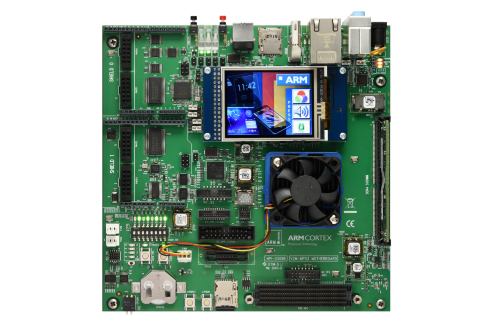

| Acronym | Full Expansion | Category | Context & Meaning in this Lab |
|---|---|---|---|
| FVP | Fixed Virtual Platform | Simulation | Arm's pre-configured, cycle-approximate system simulator (e.g. FVP_Corstone_SSE-300_Ethos-U55). Runs bare-metal firmware locally on Linux/WSL without physical development boards. |
| AVH | Arm Virtual Hardware | Simulation | Arm's overarching ecosystem and product family providing cloud and local virtual silicon models (Cortex-M, Cortex-A, Ethos-U) for automated CI/CD and embedded AI testing. |
| QEMU | Quick EMUlator | Simulation | Open-source machine emulator used for high-speed instruction-level verification of the Cortex-M55 CPU (-M mps3-an547 -cpu cortex-m55) and semihosting tests. |
| NPU | Neural Processing Unit | Hardware IP | Dedicated hardware matrix math coprocessor (here: Arm Ethos-U55 with 128 MACs/cycle) designed specifically to accelerate convolutional neural networks. |
| MVE | M-Profile Vector Extension | Hardware IP | Commercial name: Arm Helium. 128-bit vector execution pipeline integrated inside Cortex-M55 for DSP, FFT, and audio feature preprocessing. |
| Corstone-300 | Arm Corstone-300 / SSE-300 | Subsystem | Arm's reference SoC architecture integrating the Cortex-M55 CPU, Ethos-U55 NPU, AXI5 crossbar, power control, TrustZone security, and memory controllers into a turnkey SoC design. |
| AXI | Advanced eXtensible Interface | Interconnect | 64-bit multi-layer high-bandwidth bus protocol (AXI5). Ethos-U55 has two independent AXI master ports: Port M0 (Flash weights read) and Port M1 (SRAM activations read/write). |
| APB | Advanced Peripheral Bus | Interconnect | Low-power peripheral bus connecting control registers and communication interfaces like the CMSDK UART console at 0x49303000. |
| TFLM | TensorFlow Lite for Microcontrollers | AI Software | Lightweight runtime engine executing quantized neural network models within bare-metal embedded SRAM constraints without OS or dynamic heap allocation. |
| CMSIS-NN | Cortex Microcontroller Software Interface Standard • Neural Network | Software | Arm's collection of hand-optimized vector math kernels that maximize NN performance and memory efficiency on Cortex-M cores and Helium MVE. |
| TF-M | Trusted Firmware-M | Security | The reference open-source implementation of PSA Certified Level 2 security for Armv8-M TrustZone isolation between Secure and Non-Secure application domains. |
| MPC | Memory Protection Controller | Security | Hardware bus controller that intercepts illegal AXI/AHB memory accesses outside authorized domains and throws a SecureFault. |
| MFCC | Mel-Frequency Cepstral Coefficients | DSP / Audio | Audio feature representation: converts raw 16 kHz time-domain microphone speech into 49 time-frames × 10 frequency bins (490 INT8 values) passed to the AI model. |
| INT8 | 8-bit Integer Quantization | AI Software | Quantization format compressing 32-bit floating-point weights into signed 8-bit integers ([-128, 127]) for 4x memory savings and accelerated integer MAC throughput. |
| Vela | Arm Vela Compiler | Compiler | Open-source neural network compiler from Arm that compiles TFLite models into optimized hardware command streams specifically tailored for the Ethos-U microNPU. |
| Semihosting | Arm Semihosting (BKPT 0xAB) | Debug / I/O | Mechanism allowing bare-metal code running on a target/virtual core to request I/O services (file read, console print, exit code) directly from the host workstation. |
The Arm Corstone-300 FVP simulator is a bit-for-bit digital twin of this physical board. The compiled firmware.elf in this lab is directly flashable to real silicon without modifying a single line of C code or linker directives.

V2M-MPS3). Simply copy firmware.bin to the SOFTWARE/ folder on the SD card and reboot.
Method B (JTAG/SWD Debugger): Flash directly using pyOCD or Keil MDK:
bkpt 0xab) to inject browser audio. On physical hardware, the board's digital MEMS microphone (PDM/I2S) controller uses direct memory access (DMA) to stream 16 kHz audio directly into the exact same SRAM Tensor Arena address at 0x21010000.